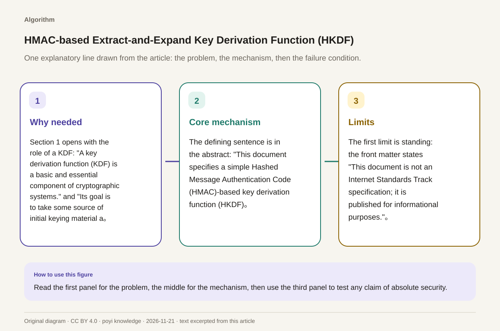
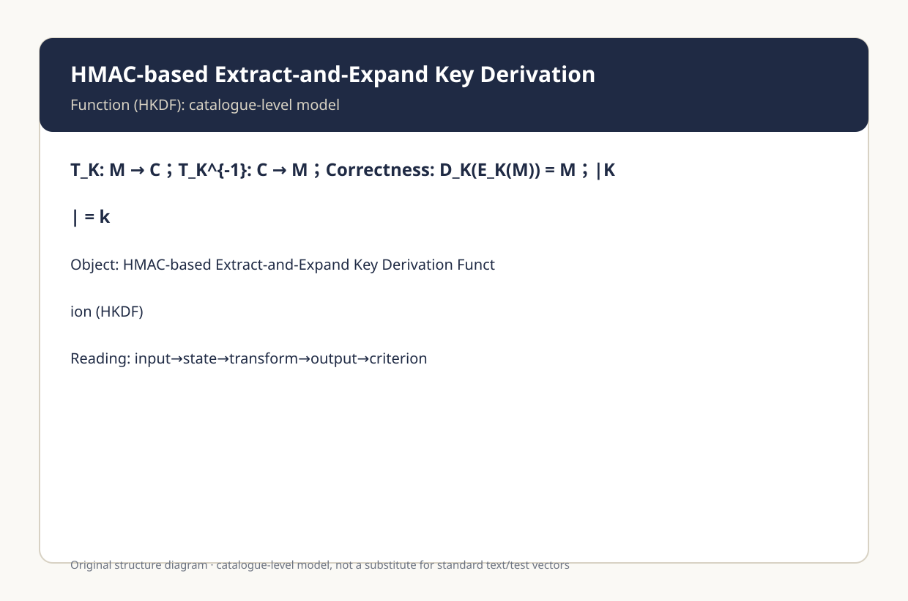

Principles
Algorithm: HMAC-based Extract-and-Expand Key Derivation (HKDF 基于 HMAC 的密钥派生). The defining sentence is in the abstract: "This document specifies a simple Hashed Message Authentication Code (HMAC)-based key derivation function (HKDF), which can be used as a building block in various protocols and applications." The same block gives the orientation: "The key derivation function (KDF) is intended to support a wide range of applications and requirements, and is conservative in its use of cryptographic hash functions." The shape is stated in §1: HKDF follows the extract-then-expand paradigm, and the KDF "logically consists of two modules." What is specified is a two-stage derivation, not a key-establishment protocol. The abstract places HKDF as a building block: what is specified is the derivation function itself, the choice of hash is left to the caller, and the use of that hash is deliberately conservative; the two-stage structure is exactly the difference from specifications that only cover expansion.

Why it matters
Section 1 opens with the role of a KDF: "A key derivation function (KDF) is a basic and essential component of cryptographic systems." and "Its goal is to take some source of initial keying material and derive from it one or more cryptographically strong secret keys." The risk sits in the input: "In many applications, the input keying material is not necessarily distributed uniformly, and the attacker may have some partial knowledge about it (for example, a Diffie-Hellman value computed by a key exchange protocol) or even partial control of it (as in some entropy-gathering applications)." Hence the purpose of the first stage is to concentrate, in the words of §1, "the possibly dispersed entropy of the input keying material into a short, but cryptographically strong, pseudorandom key". The criticism of earlier documents is in the same section: "either only consider the second stage (expanding a pseudorandom key), or do not explicitly differentiate between" the extract and expand stages, "often resulting in design shortcomings." These passages make one case: a KDF is an essential component, yet its input may be non-uniform and partly known or even partly controlled by an attacker, so a stage is needed to concentrate dispersed entropy; and since the earlier specifications either only expand or do not separate the stages, that is the position this document takes up.
Applications
Each stage is defined in its own numbered clause: §2.2 gives "HKDF-Extract(salt, IKM) -> PRK", computed as "PRK = HMAC-Hash(salt, IKM)", and §2.3 gives "HKDF-Expand(PRK, info, L) -> OKM". The obligations attach to the parameters: the salt is an "optional salt value (a non-secret random value); if not provided, it is set to a string of HashLen zeros.", the info is "optional context and application specific information (can be a zero-length string)", and §3.2 states its purpose: "Its main objective is to bind the derived key material to application- and context-specific information." Salt is optional but not to be dropped: §3.1 says "HKDF is defined to operate with and without random salt." yet adds that "designers of applications are therefore encouraged to provide salt values to HKDF if such values can be obtained by the application." The expansion output is also bounded, in the words of §2.3: "length of output keying material in octets (<= 255*HashLen)".

Limits & attacks
The first limit is standing: the front matter states "This document is not an Internet Standards Track specification; it is published for informational purposes.", the masthead Category is Informational, and §1 adds that "It is not intended as a call to change existing protocols and does not change or update existing specifications using this KDF." The second is capability: §4 concedes that HKDF does not suit every application and names low-entropy input as one significant example — "The extract step in HKDF can concentrate existing entropy but cannot amplify entropy." and "HKDF naturally accommodates the use of salt; however, a slowing down mechanism is not part of this specification." — and redirects password users elsewhere: "Applications interested in a password-based KDF should consider whether, for example, [PKCS5] meets their needs better than HKDF." The third is the strength of the claim: §5 warns that "This analysis, however, does not imply the absolute security of any scheme, and it depends heavily on the strength of the underlying hash function and on modeling choices." and that "An exposition of all of these aspects is beyond the scope of this document."
History
The masthead, read line by line, gives "Internet Engineering Task Force (IETF) H. Krawczyk", "Request for Comments: 5869 IBM Research" and "Category: Informational P. Eronen", dated May 2010, titled "HMAC-based Extract-and-Expand Key Derivation Function (HKDF)" and under "Copyright (c) 2010 IETF Trust and the persons identified as the document authors." Nothing in the document claims to obsolete or update another RFC. Section 6 records where the review and the vectors came from: "The authors would like to thank members of the CFRG (Crypto Forum Research Group) list for their useful comments, and to Dan Harkins for providing test vectors." The front matter therefore gives the number, both authors with their organizations, the date May 2010, the Informational category and the ISSN line; the document carries no Obsoletes or Updates marker, and the source of the review comments and the test vectors is recorded in §6.
Worked example & verification
Formal model and reproduction steps
[C=E_K(P;r),\qquad P=D_K(C)]
HMAC-based Extract-and-Expand Key Derivation: the registered public parameters, key material or randomness, and message are mapped through the stated transformation to an output checked against the registered criterion. The worked example is a structural reproduction, not a new test vector; parameter ranges, standard versions and implementation details remain source-bound.
References
- Wikipedia search entry for HKDF 基于 HMAC 的密钥派生. https://zh.wikipedia.org/w/index.php?search=HKDF%20%E5%9F%BA%E4%BA%8E%20HMAC%20%E7%9A%84%E5%AF%86%E9%92%A5%E6%B4%BE%E7%94%9F
- Handbook of Applied Cryptography (Menezes, van Oorschot, Vanstone). https://www.cacr.math.uwaterloo.ca/hac/